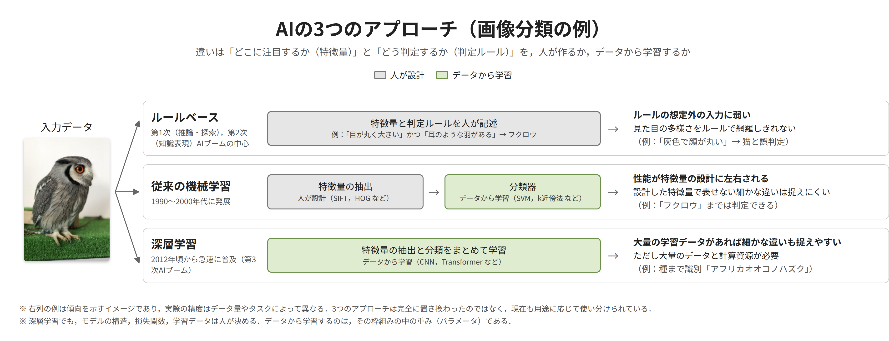
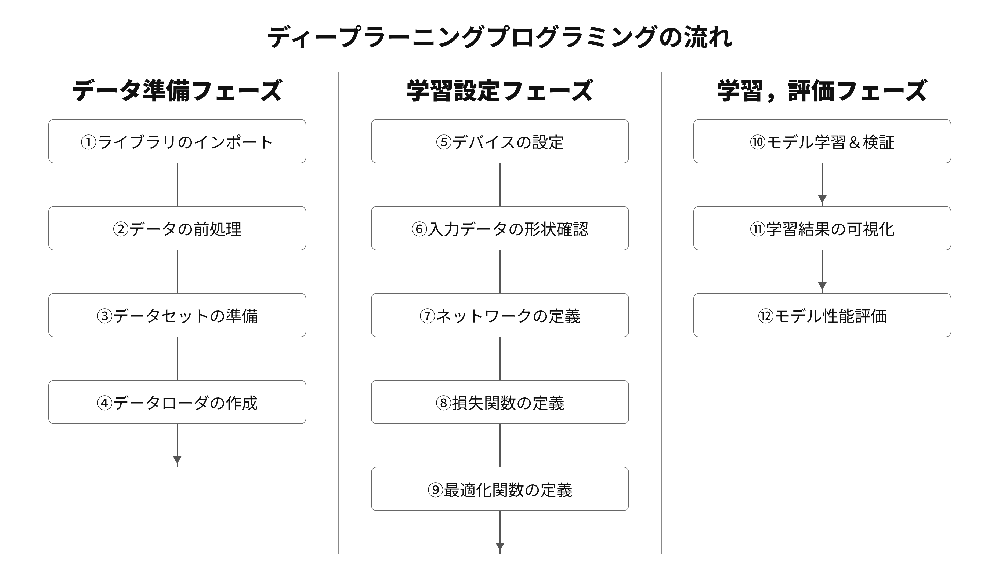
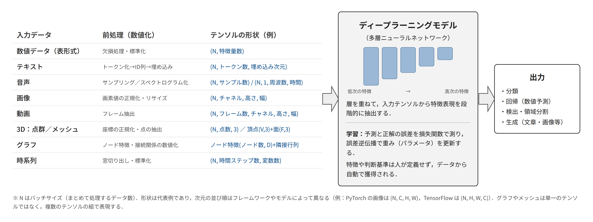

武蔵野大学データサイエンス学部 中村 亮太
前半は「ディープラーニングの本質」を図と表で討議し、教科書のコードテンプレート①〜⑫を並び替えてモデルを組み立てる。後半は自分のマシンの速さと、同じ大きさの3つのAIモデルを「正解率・損失・速度・メモリ」の4指標で測る。
この科目を貫く問いは 「その数字は信じられるか」。
7回の流れは次の3ステップ。
| 回 | テーマ | やること | 班別条件（ジグソー） |
|---|---|---|---|
| 1 | AIの性能を測る | 環境ベンチマーク／学習済み3モデルの4指標同時測定／「良いAI」の定義と順位 | なし（条件は共通） |
| 2 | 勾配の観測 | 層別勾配ノルムの記録と可視化／学習率ジグソーで発散境界を実測 | 学習率 9水準 × 3班 |
| 3 | 過学習と評価指標 | 過学習を意図的に作る／正則化3手法／損失と評価指標の乖離 | weight decay／Dropout／データ拡張 |
| 4 ★ | 再現性と分散 | 同一条件をシード5回で自動実行／差÷標準偏差／登壇発表 | なし（以後シード5回が既定） |
| 5 | アーキテクチャ比較 | 3アーキ × 3タスク × 3データ量 ＝ 27セルの格子を班で分担して埋める | 1班1セル |
| 6 | ショートカット学習 | 相関トークン混入データで学習／反転テスト／寄与度の可視化 | 相関強度 4水準 |
| 7 | スケーリング則 | 幅 × データ量 16セル／両対数プロット／伏せたセルを外挿して当てる | 16セルを班で分担（重複割当） |
python course1/day1/verify.py --group <班番号> を実行し「OK」を確認 → results/ の上記ファイルと ex0.ipynb をそのまま個別に LMS の課題「第1回」へアップロード（zip にまとめない。班の implementer が1人で提出し、他の3名は提出しない）
流れは本質（討議）→ 型（並び替えとコードの組み立て）→ 測定。計算はどれも1分以内に終わるので、時間の大半は討議と組み立てに使う。
| 時間 | 内容 | 形式 |
|---|---|---|
| 0–10 | 今日の問いの掲示。役割割当（implementer／verifier／recorder／presenter） | 講義 |
| 10–25 | 環境構築の仕上げ：手順⑤ 環境診断・データ取得、手順⑥ VS Code で開く（①〜④は事前に済ませてくる）。詰まった人を班で助ける | 個人（班で助け合う） |
| 25–40 | GW1 グループディスカッション：穴埋めシート2ページ（AIの3つのアプローチの表、フクロウの画像分類の例） | 討議 |
| 40–50 | GW2 並び替え：プログラミングの流れ12枚のカードを3フェーズに並べる。テンソルの形状を埋める | 討議 |
| 50–85 | GW3 コードを組み立てる：シャッフルされた12セルに番号を付け、並び替えて実行する（実行は約30秒）。討議5分 | 班 |
| 85–95 | グループ内プレゼン1（presenter 2分 → 他の3名 1分ずつ → 質疑）：GW1〜3 の結論 | 発表 |
| 95–110 | 演習1 環境ベンチマーク（実行1分）→ 討議（同期・帯域・演算） | 個人 → 班 |
| 110–140 | 演習2 学習済み3モデルの4指標同時測定。実行前に予測を記入 → 実行 → 討議（外れた予測から） | 個人 → 班 |
| 140–150 | 全体共有：教員が GW3 の正解率と演習2 の表を投影。提出確認・次回予告（第2回冒頭で「良いAI」の定義と順位づけ、質問カード交換） | 全体 |
MD1 と同じ流儀で環境を作る。全体の流れは Homebrew で uv を導入 → uv で Python 3.12 をインストール → 授業用フォルダ AI_TD を取得 → uv venv で仮想環境を作る → その中に uv pip install で PyTorch などを追加 → 環境診断。手順①〜④（uv の導入から uv pip install まで）は授業前に各自で済ませる（Slack で案内。PyTorch のダウンロードに数分かかる）。授業では手順⑤（環境診断とデータ取得）と⑥（VS Code でノートブックを開く）を行い、詰まった人を班で助ける。班全員が⑤まで終わったら GW1 に進む。
uv は Python のバージョン管理・仮想環境・パッケージ管理を1つのツールで行う。MD1 で導入済みなら (2) の確認だけでよい。Homebrew が無い場合は先に brew.sh の手順で入れる。
Bash # (1) Homebrew で uv をインストール brew install uv # (2) インストール確認（uv 0.10.x のようにバージョンが出れば成功） uv --version
Bash # (1) Python 3.12 を uv 経由でインストール uv python install 3.12 # (2) 確認（Python 3.12.x と出れば成功） uv run python -V
授業のコードは GitHub から取得する。フォルダ名・ファイル名に日本語は使わない。
Bash # (1) ホームへ移動し、授業用フォルダを AI_TD という名前で取得（初回のみ） cd git clone https://github.com/RNMUDS/2026AI_TD.git AI_TD # (2) 以降のコマンドはすべて AI_TD の中で実行する cd AI_TD # 2回目以降（次回の授業前）は、AI_TD の中で git pull すると最新の資料とコードに更新される git pull
※ git: command not found と出た場合は brew install git を実行してから (2) をやり直す。
仮想環境はプロジェクトごとに独立した Python 環境。MD1 の環境とは別に作るので、py5 の環境に影響しない。
Bash # (1) AI_TD の直下に仮想環境を作る（Python 3.12 を指定） uv venv --python 3.12 # (2) 仮想環境を有効化（プロンプトの先頭に (.venv) が付けば成功） source .venv/bin/activate # (3) PyTorch・pandas・matplotlib・Jupyter などをまとめて入れる（数分かかる） uv pip install -r requirements.txt
※ ターミナルを開き直したら、毎回 cd ~/AI_TD と source .venv/bin/activate をやり直す。
Bash # (1) 環境診断：チップ・メモリ・MPS が使えるか・簡易ベンチ python setup/check_env.py # (2) コーパス（SST-2，約 5MB）と FashionMNIST（約 30MB）を取得し，配布済みの学習済み重みを確認 python setup/download_assets.py
"mps_available": true なら Apple GPU が使える。false（Intel Mac など）でも CPU で完走できるが、時間の目安は対象外"problems": [] であること。import error が出たら仮想環境が有効か（プロンプトの (.venv)）を確認し、手順④ (3) をやり直すbench の3つの数値（帯域 GB/s・演算 GFLOPS・学習 ms/step）は演習1で自分で測り直す。ここではメモだけノートブック（.ipynb）は MD1 で導入した VS Code で開く。初回だけ拡張機能を2つ入れる。
Bash # (1) AI_TD フォルダを VS Code で開く（. は現在のフォルダ） code .
course1/day1/ex1.ipynb をクリックして開く.venv/bin/python を含む Python 3.12（.venv） を選ぶ作業フォルダ: /Users/…/AI_TD と表示されれば成功。以降は上から順にセルを実行する（Shift + Enter で次のセルへ）ターミナルで source .venv/bin/activate のあと uv pip install ipykernel を実行し、VS Code を開き直す（code .）。それでも出なければ、⌘ + Shift + P →「Python: Select Interpreter」で .venv/bin/python を選んでからノートブックを開く。
| 症状 | 原因 | 対処 |
|---|---|---|
uv: command not found | Homebrew のパスが通っていない | ターミナルを開き直す。それでも出なければ brew doctor の指示に従う |
ModuleNotFoundError: torch | 仮想環境が有効でない、または別の Python で実行している | source .venv/bin/activate をやり直す。VS Code はカーネルに .venv/bin/python を選ぶ |
| MPS が false（Apple Silicon なのに） | PyTorch が古い | uv pip install --upgrade torch（2.8 以上） |
download_assets.py が止まる | 学内ネットワークの制限、または Hugging Face Hub に届かない | 自宅回線でやり直す。それでも不可なら授業当日に教員が USB で配る |
ノートブックの最初のセルで 作業フォルダ: が出ない | 別の場所から開いている | ~/AI_TD の中で code . を実行し、その VS Code からノートブックを開く |
セルを実行すると ModuleNotFoundError | カーネルが .venv 以外の Python になっている | 右上の「カーネルの選択」で .venv/bin/python を選び直す |
班は4名（1班のみ5名）。役割は日替わりで回し、7回で全員が全役割を1周半経験する。今日の役割は掲示の割当表で確認する。
| 役割 | 責務 | 今日の提出物 |
|---|---|---|
| implementer | コードを書く。他の3名はコードを書かない（助言はしてよい） | ノートブック・CSV |
| verifier | 結果を疑い、隣で条件を変えて再実行する（バッチサイズ、繰り返し回数、指標の向き） | 比較表（何を変えたら何が変わったか） |
| recorder（記録・質問係） | 出たエラーと直し方、討議で割れた点を記録し、そこから他班への質問を3問作る | 失敗記録・討議メモ・質問カード（3問） |
| presenter（進行・発表係） | 討議の司会と時間管理。班の結論を一文にまとめ、グループ内プレゼンと全体共有で班を代表して話す。質問カード交換で他班3〜4班分の実測値を集める | 班の結論（一文）・集めた他班データ |
MEMBER_ROLE は "verifier"）。3役を日替わりで回すと、7回で全員が各役割を2回以上経験するMEMBER_ROLE は "collector"presenter が班の結論を2分で話し、続いて implementer・verifier・recorder が1分ずつ補足する（合計5分）。残り5分は質疑。成功した点より、行き詰まった点や予測が外れた点に報告の価値がある。
| 役割 | 話すこと |
|---|---|
| implementer | どの TODO で行き詰まったか。同期を入れる前後で数値がどう変わったか |
| verifier | 条件を変えて何が変わったか（繰り返し回数、バッチサイズ、指標の向き） |
| recorder | 出たエラーと直し方。討議で割れた点と、そこから作った他班への質問3問 |
| presenter | 班の結論（一文）と、その根拠となる数値。先頭で2分 |
recorder が作る質問は、受け取った班が10分で答え、質問元が3段階で採点する。検索でも LLM でも答えられない質問が最高評価。
| 段階 | 基準 | 例 |
|---|---|---|
| 3 | 相手の実測値を要求する。検索でも生成でも答えられない | 「あなたの班の重みで正解率の重みを 0.1 下げたとき1位は変わりますか。変わるなら何から何へ」 |
| 2 | 手法の理解を問う。教科書的だが妥当 | 「minmax と rank で順位が変わるのはどういうときですか」 |
| 1 | 用語の定義を問うだけ。調べれば分かる | 「交差エントロピーとは何ですか」 |
コードを書く作業も、誤りを見つける作業も、その多くは LLM（大規模言語モデル）を用いたツールに任せられるようになった。人がすべてのコードを一から手で打つ場面は、今後さらに減っていく。
一方で、複数の LLM が異なる案を出したとき、あるいは出力が正しいかどうか判断がつかないとき、最終的にコードを読み、根拠をもって「この方法を採る」と決めるのは人間である。その判断ができるかどうかで、LLM を使う人と、LLM に使われる人が分かれる。
この授業では LLM の利用を制限しない。そのかわり、LLM が書いたコードを読み解き、実行結果を測定し、その数値が信頼できるかを自分で確かめる力を身につける。それが LLM に仕事を任せるために必要な「コードを読む力」であり、この科目で最も重視する能力である。自班の実測値は LLM からは得られない。
「良いAI」と聞いて、正解率を思い浮かべるなら、それは4つの評価軸の1つを選んだにすぎない。今日は正解率・損失・速度・メモリの4つを同じ関数で測り、「どれを重く見るか」を班で決めてもらう。同じ数値から違う結論が出るはずで、そこが本日の中心的な論点である。
教科書 2.3 節の「コードテンプレート①〜⑫」を全14回の共通の骨格にする。章が進むと同じ番号に接尾辞が付く（⑦-CNN、⑦-転移学習、③-オリジナルデータセット）のと同じ流儀で、この授業では「⑬-計測」「⑬-記録」を1つ足す。今日のノートブックの各ブロックにはテンプレート番号を付けてある。
| 番号 | 教科書の内容 | 第1回での扱い |
|---|---|---|
| ① | ライブラリのインポート | そのまま。計測モジュール common を追加 |
| ②③ | データ変換／乱数固定とデータセット作成 | ②-テキスト（トークン化と固定長化）、③の乱数固定3行は毎回書く（第4回で検証） |
| ④⑥ | DataLoader／ミニバッチの形状確認 | ④-計測用（転送時間を混ぜないため先にデバイスへ載せる）、⑥はそのまま |
| ⑤ | 使用デバイスの選択（cuda → mps → cpu） | そのまま。get_device() は⑤にメモリ上限を足したもの |
| ⑦ | モデル定義 | ⑦-学習済みモデル（8章「学習済みモデルのロード」と同じ手順） |
| ⑧⑫ | 損失関数／テストデータでの評価 | ⑫-4指標：教科書の3行（torch.max、total、correct）に損失・時間・メモリを加える |
| ⑨⑩⑪ | 最適化関数／学習ループ／推移グラフ | 第1回は学習しないので使わない。第2回から主役になる |
| ⑬ | （授業で追加）計測・記録 | 同期、帯域、演算、ピークメモリ、共通形式 CSV への記録 |
| 指標 | 何を測るか | 向き |
|---|---|---|
| 正解率 accuracy | 正解した割合。分かりやすいが、正解と不正解の「境目の近さ」は見えない | 高いほど良い |
| 損失 loss | 正解ラベルに対する確信の低さ（交差エントロピー）。当たっていても自信がなければ大きくなる | 低いほど良い |
| 推論時間 | 1000文を流す時間（スループット）と、1文だけ入れたときの時間（レイテンシ）。この2つは別物 | 短いほど良い |
| メモリ | 重みの大きさ（今日は3モデルで同じ）と、推論中に途中の計算結果が占めるピーク（モデルで違う） | 少ないほど良い |
GPU（Apple Silicon では MPS）は命令を受け取るとすぐ制御を返し、裏で計算を続ける。time.perf_counter() で囲むだけでは命令を送った時間しか測れない。計測の前後で synchronize(device) を呼び、計算の完了を待ってから時計を読む。
M3 MacBook Air の実測では、同期なしと同期ありの時間比は 70〜225倍。同期を欠いた計測は、計算の完了時間ではなく命令の発行時間を測っている。
c = a + b は計算よりメモリの読み書きが律速になる。1回の加算で動くのは「a を読む ＋ b を読む ＋ c を書く」＝ 3 × 要素数 × 4 バイト最初の数百 ms だけ GPU が速く（実測 2.6 TFLOPS）、1秒ほどで定常値（約 1.05 TFLOPS）に落ちる。短時間の計測は過大な値を与える。演習では最低2秒回して中央値を定常値とし、初回の値は「バースト」として別に見る。
穴埋めシート（下のリンクから PDF をダウンロード）の2枚を埋める。教科書1章の内容を、答えを見ずに自分たちの言葉で再構成する。
班で1部、穴埋めシート（PDF、5ページ） をダウンロードする。記入は次のどちらでもよい。
完成したシート（PDF または写真）は recorder が失敗記録に添付し、提出物に含める。Google スライドで共同編集したい班は pptx 版 を Google ドライブにアップロードして「Google スライドで開く」を使ってよい。
教員用：答え合わせ4枚を含む版 PDF（全体共有で投影する）
ルールベース／従来の機械学習／深層学習について、「主な時期」「特徴量（どこに注目するか）」「判定ルール（どう判定するか）」「代表的な手法」を埋める。特徴量と判定ルールの欄には「人が設計」か「データから学習」のチップを貼る。
フクロウの写真を3つのアプローチで判定するとしたら、それぞれ「何を見て」「どう決めるか」を書く。ルールベースは if-then ルールを実際に書いてみる。従来の機械学習は「人が設計する特徴量」と「データから学習する分類器」を分けて書く。深層学習は「何を学習するか」を書く。最後に、それぞれの弱点を書く。
深層学習は「特徴量と判定ルールを同時にデータから学習する」。ただし、モデルの構造、損失関数、学習データは人が決める。データから学習するのは、その枠組みの中の重み（パラメータ）である。この「人が決める部分」が、次の GW2・GW3 で並び替えるプログラムの骨格そのものになる。

シート3ページ目にある12枚のカード（ライブラリのインポート、データの前処理、…、モデル性能評価）を、データ準備 → 学習設定 → 学習・評価の3つのフェーズに分け、正しい順に並べる。番号は書いていない。並べ終えたら①〜⑫の番号を書き込む。これが教科書 2.3 節のコードテンプレート①〜⑫と同じ順序になる。
シート4ページ目の表で、今日扱う2つのデータ（画像 FashionMNIST、テキスト SST-2）の「前処理」と「テンソルの形状」を埋める。残りの行（数値データ、音声、時系列）は分かる範囲でよい。どんなデータも前処理で数値化 → テンソル → ディープラーニングモデル → 出力の同じ流れに乗ることを確認する。


course1/day1/ex0.ipynb教科書 2.3 節のコードテンプレート①〜⑫（FashionMNIST を MLP で分類する完成コード）が、順番をばらばらにして、番号を伏せてノートブックに入っている。GW2 で並べた流れを手がかりに、コードを読んで番号を付け、正しい順に並べ替えて実行する。実行は3エポックで30秒ほど。
course1/day1/ex0.ipynb を開き、最初のセル（班と役割）を実行する# コードテンプレート ? の ? に①〜⑫を書き込む。implementer が書き、他の3名はコードを読んで根拠を言うNameError などで止まる。どのセルがどのセルに依存しているかをエラーから読み取り、recorder が記録するtrain_loader を使う⑩は、それを作る④より後）import だけのセルが最初、Accuracy: を表示するセルが最後no02.ipynb を持っている人は、答えを見る前に自分たちの並びと比べる「正しい順に並べて」と LLM に頼めば答えは出る。しかし演習2以降で必要なのは、このコードが何をしているかを自分で説明できることである。先に読み、迷ったセルだけ「このセルは何をしているか」を LLM に聞く。
| 項目 | 参考値 |
|---|---|
| 学習時間（3エポック、MPS） | 約 15〜30 秒 |
| テストデータの正解率 | 約 86〜87%（3エポック。教科書の10エポックでは約 88%） |
| 訓練／検証／テストの件数 | 48,000 ／ 12,000 ／ 10,000 枚 |
NameError で止まったセルがあれば、「どのセルが先に必要だったか」を記録するcourse1/day1/ex1.ipynb を上から順に実行し、TODO を埋める。実行時間は1分以内。implementer が書き、verifier は隣で条件を変えて再実行する。
| # | 教科書 | 内容 | TODO |
|---|---|---|---|
| (0) | — | 班と役割の設定。GROUP_ID と MEMBER_ROLE を自分のものに書き換える | 書き換え |
| (1)–(2) | ①、⑬-計測 | インポート、機種情報（チップ・メモリ・OS・PyTorch の版） | — |
| (3) | ⑤（2.3節） | 使用デバイスの選択。cuda → mps → cpu の3分岐 | TODO 1 |
| (4) | ⑬-計測 | 同期あり／なしで行列積の時間を比べる | TODO 2 |
| (5) | ⑬-計測 | B1 メモリ帯域（GB/s）。2秒回して中央値 | TODO 3 |
| (6) | ⑬-計測 | B2 演算性能（GFLOPS） | TODO 4 |
| (7)–(8) | ⑬-計測 | B3 学習ステップ時間（ms/step）、1GB 確保時のピークメモリ | — |
| (9)–(10) | ⑬-記録 | 台帳（CSV）へ投稿し、読み戻して確認 | — |
| (11) | — | 討議 グループディスカッション1 → プレゼン1 | 討議メモ |
TODO 1：使用デバイスの選択（ブロック 3、教科書テンプレート⑤）
教科書 2.3 節のテンプレート⑤と同じ3分岐。MPS（Apple GPU）が使えるかの判定 torch.backends.mps.is_available() を MPS_AVAILABLE に書く。未実装のまま実行すると AssertionError: TODO 未実装 で止まる。
Python # コードテンプレート⑤ MPS_AVAILABLE = torch.backends.mps.is_available() if torch.cuda.is_available(): device = torch.device("cuda") elif MPS_AVAILABLE: device = torch.device("mps") else: device = torch.device("cpu") print(f"使用デバイス: {device}")
TODO 2：同期（ブロック 4）
計測の前に1回（先行する計算を終わらせる）、後に1回（今の計算を終わらせる）。片方だけでは足りない。
Python synchronize(device) # 前：先行する計算を全部終わらせてから時計を読む t0 = time.perf_counter() for _ in range(10): c = a @ b synchronize(device) # 後：計算の完了を待ってから時計を読む t_sync = (time.perf_counter() - t0) / 10
TODO 3・4：動いたバイト数と演算数（ブロック 5・6）
加算は「読み2本＋書き1本」、float32 は4バイト。行列積は N³ 回の乗算と N³ 回の加算。
Python bytes_moved = 3 * n * 4 # 読み a, b ＋ 書き c，各 4 バイト flops = 2 * N ** 3 # 乗算 N^3 ＋ 加算 N^3
| 項目 | 参考値 | 読み方 |
|---|---|---|
| 同期あり／なしの比 | 70〜225倍 | CPU ではほぼ1倍。MPS で1倍に近ければ同期を入れ忘れている |
| B1 帯域（定常） | 約 44 GB/s（バースト 84〜90） | 公称 100 GB/s の4〜5割。バーストは公称値の約9割に達する |
| B2 演算（定常） | 約 1,050 GFLOPS（バースト 2,600） | 定常とバーストの差は帯域より大きい |
| B3 学習 | 約 55 ms/step（3.7M パラメータの参考） | 授業中の「待ち時間」を決める数字 |
10 を 1 と 100 にして、同期比がどう動くかを見るmin_sec=2.0 を 0.2 にして、中央値がバースト側に寄るかを見るpresenter が進行し、班の4台の数値を並べる（ノートブックのブロック 11 が自分の行を出す。他の3台は画面を見せ合う）。全員が1回は発言。recorder は結論を3行で残す。
3つの学習済みモデル（A1 埋め込み平均＋MLP／A2 1次元畳み込み／A3 小型 Transformer）を動かし、正解率・損失・推論時間・メモリを同じ関数で測って1枚の表にする。3モデルはパラメータ数を約30万に揃え、同じデータ（SST-2 映画レビューの肯定／否定）で同じ回数だけ学習してある。
結果を見る前に、4人それぞれが次の表を埋める。外れた予測がプレゼン2の材料になる。当たった予測より価値がある。
| 問い | 予測 | 根拠（一言） | 実際 |
|---|---|---|---|
| 最も正解率が高いのは | |||
| 最も損失が低いのは | |||
| 1000文あたり最も速いのは | |||
| 1文あたり最も速いのは | |||
| 推論中のメモリが最も少ないのは | |||
| 正解率1位と損失1位は同じモデルか | はい／いいえ |
| # | 教科書 | 内容 | TODO |
|---|---|---|---|
| (1)–(2) | ①、⑤ | インポート、使用デバイスの選択 | — |
| (3) | ②③-テキスト | 乱数固定の3行とデータセット。評価にはテストデータ（1,821文。訓練にも検証にも使っていない文）を使う | — |
| (4) | ④⑥-計測用 | ミニバッチを先にデバイスへ載せる（転送時間を混ぜない）。形状を確認する | — |
| (5) | ⑦-学習済みモデル（8章） | 学習済みモデルのロード。load_state_dict で読み込み、評価モードにする | TODO 1 |
| (6) | ⑧⑫-4指標 | 損失関数と正解率。教科書⑫の3行で予測クラスを取り、正解数を数える | TODO 2 |
| (7) | ⑬-計測 | 推論時間。スループット（1000文あたり ms）とレイテンシ（1文 ms） | TODO 3 |
| (8) | ⑬-計測 | メモリ。重みの大きさと推論中のピーク（順伝播フックで同期的に読む） | — |
| (9)–(11) | ⑫-4指標、⑬-記録 | GPU を2秒間動作させて定常状態にしてから3モデルを同時測定 → 予測と照合 → CSV に記録 | — |
| (12) | — | 討議 グループディスカッション2 → プレゼン2 | 討議メモ |
TODO 1：学習済みモデルのロードと評価モード（ブロック 5、教科書⑦-学習済みモデル／8章）
重みファイルには構造の情報（隠れ幅など）も入っている。同じ構造を組み立ててから load_state_dict で学習済みパラメータを読み込む。推論だけなので評価モードにして Dropout などを無効化する。
Python model.load_state_dict(ckpt["state_dict"]) # 学習済みモデルのロード model.eval() # 評価モード（Dropout などを無効化）
TODO 2：予測クラスと正解数（ブロック 6、教科書テンプレート⑫）
教科書⑫の3行をそのまま書く。torch.max(outputs.data, 1) は（最大値, その位置）を返し、位置が予測クラスになる。未実装だと AssertionError: TODO 未実装 で止まる。
Python _, predicted = torch.max(outputs.data, 1) # 教科書⑫と同じ：確率最大のクラス total += labels.size(0) correct += (predicted == labels).sum().item()
TODO 3：時計を読む前に同期（ブロック 7）
演習1と同じ。この TODO を忘れてもエラーは出ない。数値が不自然に小さくなるだけ。verifier は同期を外した値と比べて何倍の差が生じるかを記録する。
Python for tokens, _ in batches: model(tokens) synchronize(device) # 計算の完了を待ってから時計を読む times.append(time.perf_counter() - t0)
| model | Accuracy | Loss | ms / 1000文 | ms / 1文 | peak MB |
|---|---|---|---|---|---|
| A1 埋め込み平均＋MLP | 0.8056 | 0.4664 | 6.0 | 0.71 | 1.16 |
| A2 1次元畳み込み | 0.7897 | 0.6941 | 26.9 | 0.75 | 8.0 |
| A3 小型 Transformer | 0.8094 | 0.4348 | 81.3 | 1.68 | 11.47 |
正解率・損失・パラメータ数は2回実行しても完全に一致する。時間は実行ごとに数%変動する。1つのモデルが4指標すべてで最良にはならないことを確認する。
予測表を4人分並べ、外れた予測から話す。全員が1回は発言する。ブロック 12 が4指標の順位表を出す。
forward を見て答える）Bash # 班番号を入れて形式検証（OK が出るまで提出しない） python course1/day1/verify.py --group 12 # 出るべきファイル（班 12 の例） ls results/ | grep _12 # c1_d1_ex0_12.csv c1_d1_ex1_12.csv c1_d1_ex2_12.csv table_c1_d1_ex2_12.csv
| 確認項目 | |
|---|---|
| 演習1の CSV に班員全員分の行がある（各自が自分のマシンで投稿 → 1台に集める） | |
| 演習2の表に A1・A2・A3 の3行があり、4指標＋パラメータ数が入っている | |
GW3 の ex0.ipynb が正しい順で最後まで実行され、c1_d1_ex0_<班>.csv に正解率が記録されている | |
| 記入済みの穴埋めシート（PDF または写真）が失敗記録に添付されている | |
| recorder の失敗記録・討議メモ（GW1〜3、演習1、演習2）がある | |
verify.py が OK: 提出物の形式に問題なし を出した | |
zip にしていない。ファイル名に班番号（_12 など）が入ったまま、名前を変えていない |
前半は今日の演習2の表を使い、班で「良いAI」を一文で定義して3モデルの順位を出す。同じ数値から班ごとに違う順位が出ることを、質問カード交換で他班と比べる。後半は自分で学習を回し、層ごとの勾配の大きさを記録して可視化する。今日並び替えたテンプレート⑩の学習ループがそのまま使われる。